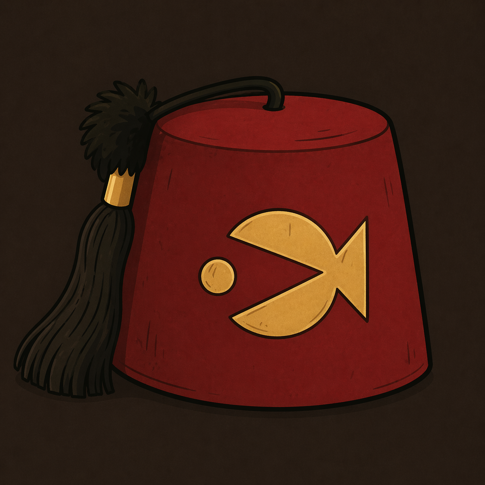

Uniforme da Cabana
Fez do Tio Stan
Inspirado no acessório mais marcante do dono da loja, este fez combina humor, nostalgia e uma dose de autoridade duvidosa.
É o tipo de peça que funciona tanto como item de coleção quanto como fantasia temática para visitas, eventos ou fotos memoráveis.
R$ 45,00
Popular
- Tecido estruturado com visual clássico e acabamento bordado.
- Leve e confortável para uso em eventos ou decoração.
- Combina perfeitamente com coleções inspiradas em Gravity Falls.